Counting Coins in the Dark
May 25, 2017

My friend Dario says this is a Google interview question.
Problem statement
You're in a dark room with n coins. You're told that there are m heads (and therefore n-m tails). You're allowed to flip coins over if you want. The goal is to partition the n coins into 2 piles (not nec. w/ the same number of coins) such that each pile has the same number of heads.
Example
With n=10 coins, m=6 of which are heads, you might simply split the pile into two equal halves and hope that you get m/2=3 heads in each pile.

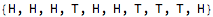


You can see the partitions don’t have an equal number of heads. You weren’t feeling lucky.
So this scheme doesn’t have the property that for all sets of coinflips, it partitions the set into two subsets which have the same number of heads.
Can we devise a better scheme?
Solution
There are 3 cases to consider:
Case 1. If m==0, there are no heads, so we partition the coins into “the empty set” and “all the coins”, which each has 0 heads, and you’re done.
Case 2. If m>n/2, flip all the coins. Now you have a situation with n coins and 0<m≤n/2 heads, which is Case 3.
Case 3. If 0<m≤n/2, do this:
Partition the coins into an m-length list  and an (n-m)-length list
and an (n-m)-length list  . Let k denote the number of heads in list 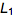, so the number of tails in
. Let k denote the number of heads in list 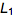, so the number of tails in  is (m-k). Since there are m heads total, if
is (m-k). Since there are m heads total, if  has k heads then
has k heads then  has m-k heads. Therefore, by flipping all
has m-k heads. Therefore, by flipping all  ’s coins,
’s coins,  ’s m-k tails become m-k heads, matching 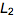’s m-k heads. So they have the same number of heads, so we are done.
’s m-k tails become m-k heads, matching 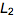’s m-k heads. So they have the same number of heads, so we are done.
Example
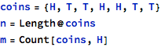
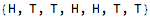

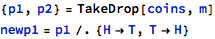
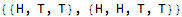
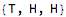
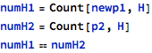


Proof by 1 example.
Numerical check of n=1,...,100
First let’s extend the definition of the Not[] function to work on the symbols H and T (heads & tails):

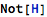
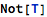


Here is a function that runs this algorithm:
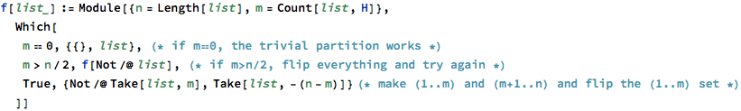
It partitions the list into an m-length list and a (n-m)-length list, and flips the coins in the m-length list:
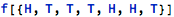
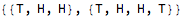
If m==0, no heads. A boring partition will work:
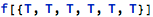

If m>n/2, flip everything and run f[] again:
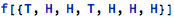

Here is a function that checks if each set in the partition has the same number of heads:
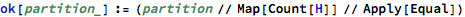
Same number of Heads is OK:


Different number of Heads is not OK:
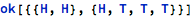

Here are all the possible sets of 4 coin flips (order doesn’t matter):


Run f[] on all the flips and see if the resulting partition has equal numbers of heads:

| flips | partition | OK? |
| {T,T,T,T} | {{},{T,T,T,T}} | True |
| {H,T,T,T} | {{T},{T,T,T}} | True |
| {H,H,T,T} | {{T,T},{T,T}} | True |
| {H,H,H,T} | {{H},{T,T,H}} | True |
| {H,H,H,H} | {{},{T,T,T,T}} | True |
Here is a function that test whether f[] returns an OK partition for every possible set of n coinflips:

We already saw that our algorithm works for n=4 coins:


Does it work for n coins, for n=1,...,100?
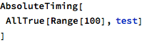
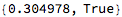
Nice!